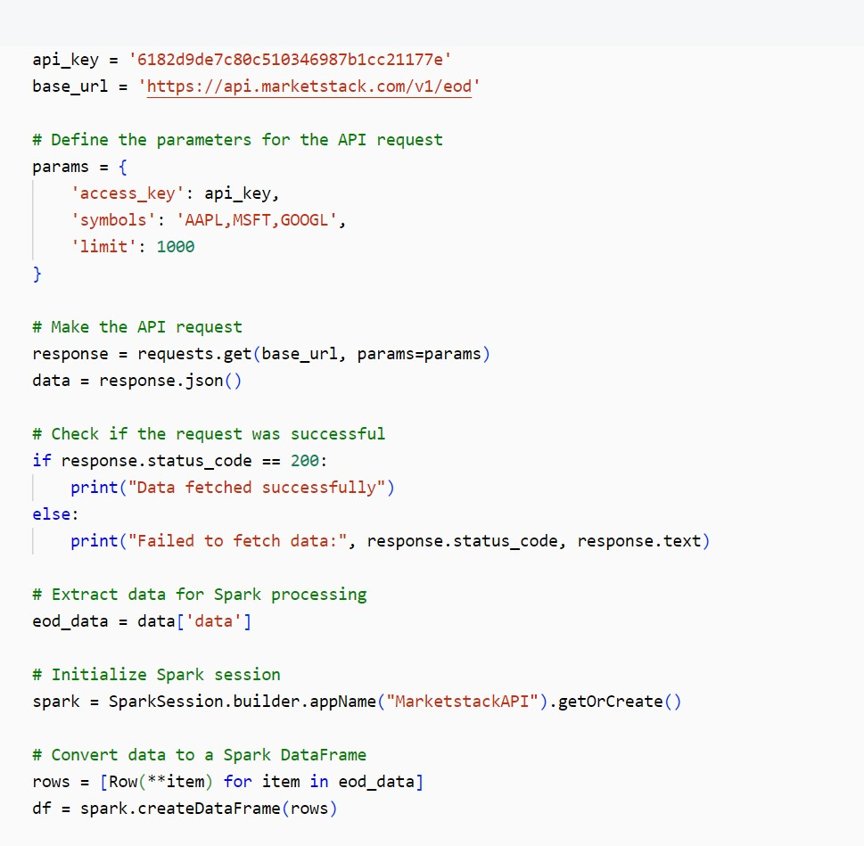
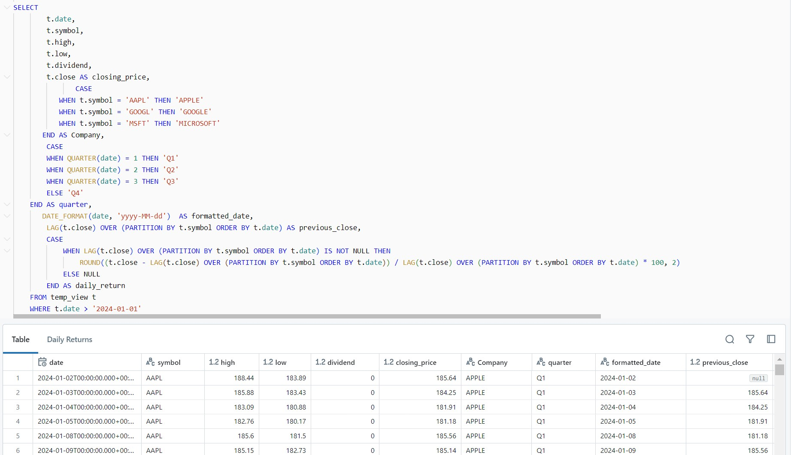
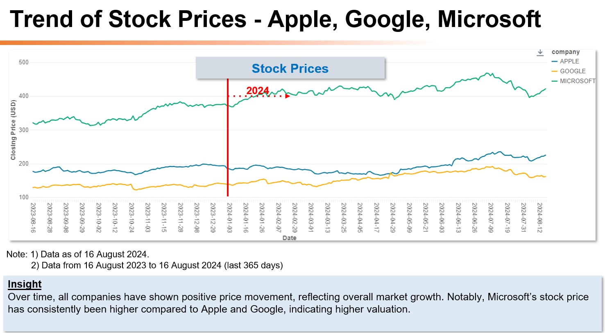

Go Back
Stock Market Analysis – For Apple, Google & Microsoft by extracting the data from the MarketStack API.

About Market Stack
1) Marketstack is a financial market data API that provides real-time, intraday, and historical stock market data.
2) Marketstack offers API of a stock market data solution for both developers and companies.
3) Marketstack API support more than 170,000 stock tickers from more than 70 global stock markets.
Reference Links:
https://marketstack.com/documentation
Data Extracted:
1) Data as of 16 August 2024
2) Data from 1 January 2024 to 16 August 2024 (YTD)
Problem Statement:
This project aims to analyze stock market data using the Marketstack API to help investors make informed decisions. By retrieving real-time and historical data for selected stocks (such as Apple, Microsoft, and Google), the goal is to identify trends and compare stock performance over time. The data needs to be cleansed, transformed from raw to aggregated form, and processed for visualization. This allows us to spot patterns in market behavior and track key metrics such as price changes and performance indicators. These insights are essential for investors and financial analysts to understand market movements, compare stocks, and develop more informed strategies for investment and risk management.
Utilized functionality in Databricks:
• REST API Support
• PySpark
• Databricks Python
• Databricks SQL
• Compute
• Job Scheduling and Automation
• Workspace
• Catalog
• Notebooks
Dashboard Overview: Collected and analyzed stock market data using SQL, Python, and PySpark to create visual insights that helped improve investment decisions and track market trends. Retrieved data from the API, saved it as a CSV file in the Databricks File System (DBFS), and organized it into clear, structured formats for analysis. Also, created visual reports in Microsoft PowerPoint to showcase important market trends and key performance metrics for better understanding and decision-making.
Here are some key insights:
1) Trend of Stock Prices - Apple, Google, Microsoft: Over time, all companies have shown positive price movement, reflecting overall market growth. Notably, Microsoft’s stock price has consistently been higher compared to Apple and Google, indicating higher valuation.
2) Trend of Trading Volume - Apple, Google, Microsoft: Trading volume trends show that while all companies have experienced growth, Apple's trading volume has notably surged compared to Microsoft and Google.
3) Highest / Lowest Price in 2024 - Apple, Google, Microsoft: Microsoft's average high and low stock prices are significantly higher than Apple and Google.
4) Daily Stock returns in 2024 - Apple, Google, Microsoft: - Return trend of Microsoft declined from Q1 to Q3, even though Microsoft was the best performer in Q1 among the three companies. Apple and Google displayed the highest return in Q2 and followed the downward trend in Q3.
Click here to see >> GitHub

